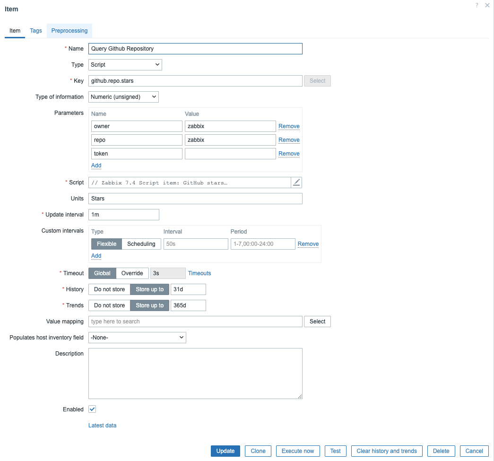
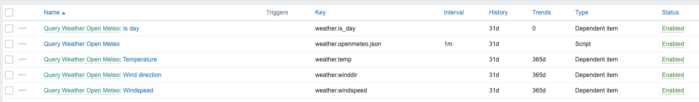

Script item
Zabbix offers several item types for gathering data, but sometimes you need logic, multiple API calls, or data manipulation that's too complex for simple preprocessing. Script items fill that gap, they run JavaScript directly on the Zabbix Server or Proxy and can fetch, process, and return data exactly how you need it.
In this chapter, we'll explore what script items can do through two working examples:
- Checking GitHub repository stars via public API
- Querying the public weather page Open-Meteo
Understanding Script items
Script items execute JavaScript in the Zabbix backend using the built-in Duktape engine.
They're ideal when you need:
- HTTP or API calls that return JSON/XML data
- Conditional logic or loops
- Chained API requests (login + data fetch)
- Monitoring without deploying an agent
Common JavaScript objects
Zabbix provides several JavaScript objects for script items:
| Object | Purpose |
|---|---|
HttpRequest |
Perform HTTP(S) requests |
Zabbix.log(level, message) |
Log messages (level 4=debug, 3=info, etc.) |
JSON.parse() / JSON.stringify() |
Handle JSON data |
parameters.<name> |
Access item parameters defined in the UI |
Limits: up to 10 HttpRequest objects per run; typical timeout ≤ 30 seconds
(depending on item settings).
The complete list of objects can be found in the official Zabbix documentation: https://www.zabbix.com/documentation/current/en/manual/config/items/preprocessing/javascript/javascript_objects
Let's create some example scripts so that you get a better understanding of how it works.
Create a new host in Data collection -> Hosts.
- Host name: javascript
- Host groups: JS Servers
Actually name and group are not important at all in this case :) When done create an item on the host.
Example 1 – Query a public API (GitHub repository stars)
This item will return the current number of stars for a given GitHub repository using the REST API.
Item setup
| Field | Value |
|---|---|
| Name | Query Github Repository |
| Type | Script |
| Key | github.repo.stars |
| Type of information | Numeric (unsigned) |
| Unit | Stars |
| Update interval | 1h |
| Timeout | 5s |
| Parameters | owner = zabbix |
repo = zabbix |
|
token = <optional Github token> |
Note: GitHub’s API enforces rate limits for unauthenticated requests (≈60/hour per IP). Add a personal access token for higher limits.
Add the following code in the script box of the item.
// Parameters (item → Parameters):
// owner = zabbix
// repo = zabbix
// token = <optional PAT>
// Parse parameters from `value` (JSON string)
var p = {};
try {
p = JSON.parse(value); // { owner, repo, token }
} catch (e) {
throw "Parameter JSON parse failed: " + e;
}
var owner = p.owner;
var repo = p.repo;
var token = p.token || "";
if (!owner || !repo) {
throw "Missing 'owner' or 'repo' parameter";
}
var url = "https://api.github.com/repos/" + owner + "/" + repo;
var req = new HttpRequest();
req.addHeader("User-Agent: zabbix-script-item"); // required by GitHub
req.addHeader("Accept: application/vnd.github+json");
if (token) {
req.addHeader("Authorization: Bearer " + token);
}
var body = req.get(url);
var code = req.getStatus();
if (code !== 200) {
throw "GitHub API HTTP " + code + " body=" + body;
}
var data = JSON.parse(body);
if (typeof data.stargazers_count !== "number") {
throw "Unexpected response: missing stargazers_count";
}
return data.stargazers_count;

Example trigger
In this case we get an alert if the script returns 0
Example 2 - Public weather
In this script we call Open-Meteo and ask for for information like temperature, windspeed, direction based on our longitude / latitude.
Item setup
| Field | Value |
|---|---|
| Name | Query Weather Open Meteo |
| Type | Script |
| Key | weather.openmeteo.json |
| Type of information | Text |
| Update interval | 1h |
| Parameters | latitude = 50.85, longitude = 4.7 |
temperature_unit = celsius (celsius / fahrenheit) |
|
windspeed_unit = kmh (kmh / ms / mph / kn) |
Add the following code in the script box.
// Parameters (item → Parameters):
// latitude = 50.85
// temperaature_unit = 4.7
// windspeed_unit = kmh / ms / mph / kn
function toNumberFixLocale(s){ if(s==null)return NaN; var t=String(s).trim().replace(",","."); return parseFloat(t); }
var p={}; try{ p=JSON.parse(value);}catch(e){ throw "Param JSON parse failed: "+e; }
var lat=toNumberFixLocale(p.latitude), lon=toNumberFixLocale(p.longitude);
if(isNaN(lat)||isNaN(lon)) return JSON.stringify({ok:0,status:"BAD_COORDS",note:"Use dots, e.g. 50.85 and 4.35"});
if(lat<-90||lat>90||lon<-180||lon>180) return JSON.stringify({ok:0,status:"RANGE_ERROR"});
var tUnit=(p.temperature_unit||"celsius").toLowerCase();
var wUnit=(p.windspeed_unit||"kmh").toLowerCase();
var url="https://api.open-meteo.com/v1/forecast?latitude="+encodeURIComponent(lat)+"&longitude="+encodeURIComponent(lon)+"¤t_weather=true&temperature_unit="+encodeURIComponent(tUnit)+"&windspeed_unit="+encodeURIComponent(wUnit)+"&timezone=auto";
var req=new HttpRequest(); req.addHeader("User-Agent: zabbix-script-item");
var body=req.get(url); var code=req.getStatus();
if(code!==200) return JSON.stringify({ok:0,status:"HTTP",http:code,url:url,body:String(body).slice(0,180)});
var j; try{ j=JSON.parse(body);}catch(e){ return JSON.stringify({ok:0,status:"BAD_JSON"}); }
var cw=j.current_weather||j.current||null;
if(!cw||typeof cw.temperature!=="number"||typeof cw.windspeed!=="number") return JSON.stringify({ok:0,status:"NO_CURRENT"});
return JSON.stringify({ok:1,status:"OK",temperature:cw.temperature,windspeed:cw.windspeed,winddirection:cw.winddirection,is_day:cw.is_day,time:cw.time||""});
Next create a few dependent items that use this script as master item.
| Field | Value |
|---|---|
| Name: | Temperature |
| Key: | weather.temp |
| Type of information: | Float |
| Preprocessing | JSONPath: -> $.temperature |
| Field | Value |
|---|---|
| Name: | Windspeed |
| Key: | weather.windspeed |
| Type of information: | Float |
| Preprocessing | JSONPath: -> $.windspeed |
| Field | Value |
|---|---|
| Name: | Wind direction |
| Key: | weather.winddir |
| Type of information: | Unsigned |
| Preprocessing | JSONPath: -> $.winddirection |
| Field | Value |
|---|---|
| Name: | Is day |
| Key: | weather.is_day |
| Type of information: | Unsigned |
| Preprocessing | JSONPath: -> $.is_day |

Best practices and troubleshooting
- Timeouts: Keep script execution short; APIs may delay.
- Testing: Use “Check now” in the item to see raw output.
- Logging: Use
Zabbix.log(3, "message")for debug output (appears in server or proxy log). - Error handling: Always
throwerrors instead of returning strings; Zabbix will mark the item as unsupported automatically. - Object reuse: Each script can create up to 10
HttpRequestobjects reuse one when chaining API calls. - Security: Never hard-code passwords or tokens; use macros or item parameters.
When to use Script items
Use Script items when:
- You need logic, loops, or multiple API calls.
- You monitor remote services where agents aren't available.
- You want to prototype an integration before writing a custom plugin.
For simple JSON transformations, preprocessing JavaScript might be enough, but Script items shine when you need full control.
Expert techniques for Script items
1. Debugging things
During development, use the internal logging API to trace script behavior:
Zabbix.log(4, "Debug: response body = " + body);
Zabbix.log(3, "Info: token received successfully");
Zabbix.log(2, "Warning: unexpected API reply");
Tip
- Log level
4= debug, visible only if the server log level ≥4. - Log level
3= informational. - The log lines are written to the Zabbix server or proxy log, not the frontend.
When a script throws an error, Zabbix automatically marks the item as unsupported.
2. Using macros and secret parameters
Always move credentials, tokens, and sensitive values to item parameters or macros rather than hard coding them.
For example:
| Parameter | Value |
|---|---|
token |
{$GITHUB_TOKEN} |
Then define {$GITHUB_TOKEN} in your host or template with secret visibility.
This allows you to reuse the same script safely across environments.
Tip
Manage secrets via template macros so that they are portable if you export the template. Store secrets in a vault instead of the DB.
3. Error handling and fallback logic
Production scripts should degrade gracefully. You can catch and handle network failures, retry, or return a fallback value:
var req = new HttpRequest();
try {
var data = req.get(parameters.url);
if (req.getStatus() !== 200)
throw "HTTP " + req.getStatus();
return JSON.parse(data).value;
}
catch (e) {
Zabbix.log(2, "Request failed: " + e);
return 0; // Fallback value for triggers
}
This script catches any errors (network failure, bad JSON, missing .value, etc.): Logs the error at severity level 2 (Warning) into the Zabbix server log. It returns a numeric 0 instead of throwing errors, so the item remains supported.
4. Caching between executions
Script items don't keep memory between runs, but you can reuse data efficiently by combining one master Script or trapper item that stores the full JSON response with several dependent items that extract individual fields. This isn't true caching inside JavaScript. It's data reuse via Zabbix history, avoiding repeated API calls.
5. Parallelization and performance considerations
Each Script item consumes one poller slot. If you have dozens of Script items that do API calls, consider:
- Running them on a proxy close to the data source (reduces latency).
- Adjusting
StartPollersandTimeoutinzabbix_server.conf. - Avoiding heavy JSON parsing or unnecessary loops.
- Using asynchronous APIs only when truly needed. Duktape executes synchronously.
A single bad Script item can block a poller for its entire timeout period, so always test and tune.
6. Returning structured data
Script items can return JSON strings which can then be used in dependent items. Example: returning a JSON object containing multiple metrics.
Then create dependent items with JSONPath like:
This allows one Script item to feed many dependent metrics. A professional optimization pattern.
7. Combining script items with preprocessing JavaScript
Advanced users often pair a Script item that performs heavy retrieval with preprocessing JavaScript that performs lightweight normalization.
Example:
- Script item fetches a full JSON payload from an API.
- Dependent item extracts a numeric value using preprocessing JavaScript:
This separates responsibilities and makes troubleshooting easier.
8. Controlling execution context
Script items always run on the poller process of either the Zabbix server or proxy. Understanding this helps when debugging:
- If an item runs on a proxy, it has network access only from the proxy’s location.
- You can force execution on a proxy by assigning the host to that proxy.
- Logs for script execution appear in the respective poller’s log file.
Info
There is a small exception when it comes to the use of the poller process. If you make use of the test button to test the item then the check will not user the poller but the task manager process.
9. Best practice checklist
- ✅ Keep scripts short (<200 lines).
- ✅ Always handle HTTP status codes and JSON errors.
- ✅ Use parameters or macros for configuration.
- ✅ Log at
Zabbix.log(3, ...)for operations andZabbix.log(4, ...)for debugging. - ✅ Reuse a single
HttpRequestobject per script. - ✅ Test interactively in the frontend with “Check now”.
- ✅ Document the purpose and return type at the top of each script.
12. Summary
By mastering Script items, you've reached the expert level of Zabbix data collection. You now understand not just how to fetch and return data, but how to:
- Debug effectively
- Secure your credentials
- Handle API errors gracefully
- Optimize poller usage
- Reuse scripts for multiple metrics
These skills let you integrate Zabbix with virtually any system.
Note
When a Script item is executed, Zabbix starts a Duktape JavaScript interpreter
inside the server or proxy process. For each check run, Zabbix injects a few
built-in variables into the script’s environment the most important one is
value.
value is a JSON string that contains all item parameters you defined under
Parameters → Name / Value.
Inside the script, you must parse it first:
var p = JSON.parse(value);
You can then access the parameters by name:
var host = p.host;
var port = p.port;
If you try to reference a parameters object (as seen in some very old examples),
you will get : ReferenceError: identifier 'parameters' undefined because the
Duktape runtime does not inject such a variable anymore. All parameters are
passed inside the value JSON string.
Conclusion
Script items make Zabbix remarkably flexible — they let you collect data from any API or service with just a few lines of JavaScript. While the built-in Duktape engine is synchronous and minimal, meaning no true parallelism or advanced JS features, it’s more than enough for lightweight automation and integrations.
The key to using Script items effectively is efficiency: fetch once, reuse results through dependent items, and keep scripts small and predictable. When heavier or high-frequency polling is needed, move it closer to the data source with proxies or external collectors.
With those principles in mind, Script items become your gateway between Zabbix and the modern API world — simple, powerful, and entirely scriptable.
Questions
- What makes Script items different from external checks or user parameters in Zabbix?
- How are Script item parameters passed to the JavaScript environment in modern Zabbix versions?
- Why does using JSON.parse(value) make your scripts more portable?
- How can you avoid making multiple API calls when several metrics come from the same endpoint?
- Why are global macros usually not a good choice for secrets in exported templates?